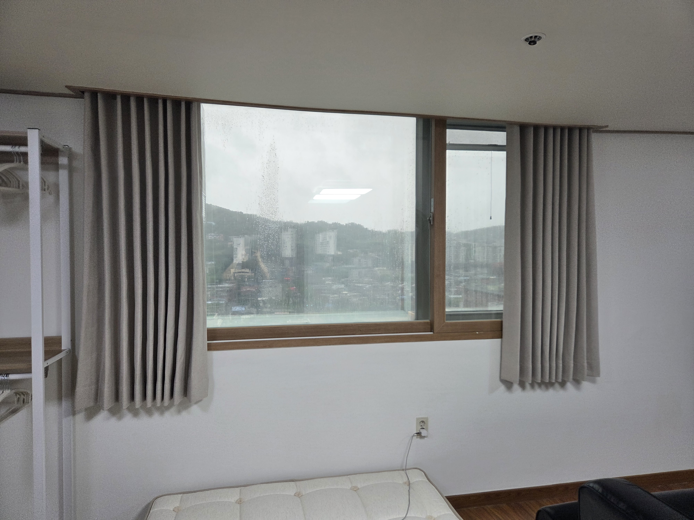
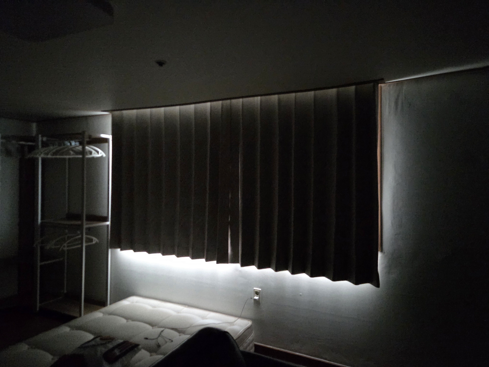

안녕하세요, 수도권 커튼·블라인드 전문 드리움 커튼&블라인드입니다. 이번 현장은 구리시 오피스텔의 암막커튼 시공이었습니다. 창 사이즈에 딱 맞춘 맞춤 제작으로, 빛샘 없이 깔끔하게 완성한 현장을 소개해드릴게요.
샤넬 암막커튼 — 은은한 질감과 확실한 차광

이번에 사용한 원단은 샤넬 암막입니다. 이름처럼 은은하게 결이 살아있는 텍스처가 특징이라, 밋밋하지 않으면서도 공간을 고급스럽게 만들어줍니다. 여기에 암막 기능이 더해져 빛 차단과 인테리어 효과를 동시에 잡을 수 있습니다.
이번 시공 요약
- 위치 · 구리시 오피스텔
- 공간 · 오피스텔 창
- 제품 · 샤넬 암막커튼
- 포인트 · 샷시 사이즈 맞춤 제작, 빛샘 최소화
시공 포인트 — 샷시 사이즈에 딱 맞춘 맞춤 제작

이번 커튼의 핵심은 샷시(창틀) 사이즈에 정확히 맞춘 맞춤 제작입니다. 기성 사이즈로 대충 맞추면 빛이 새거나 원단이 남아 지저분해 보이기 쉬운데요, 드리움은 현장 실측을 바탕으로 창 폭과 높이에 맞게 재단해, 커튼을 쳤을 때 빈틈 없이 딱 떨어지도록 시공했습니다.
완성 — 확실한 암막 효과

불을 끄고 커튼을 모두 친 모습입니다. 창으로 들어오던 빛이 대부분 차단되어, 오피스텔 공간이 아늑한 수면 환경으로 바뀌었습니다. 맞춤 제작으로 좌우·하단 빛샘도 최소화했습니다.
드리움은 구리·남양주를 비롯한 서울 동부와 광명·부천·인천 등 수도권 전 지역에서 정밀 실측부터 시공까지 직접 진행합니다. 원룸·오피스텔 커튼도 편하게 문의 주세요!